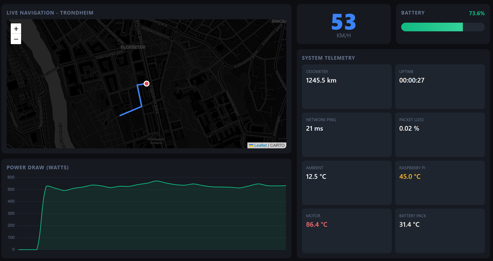
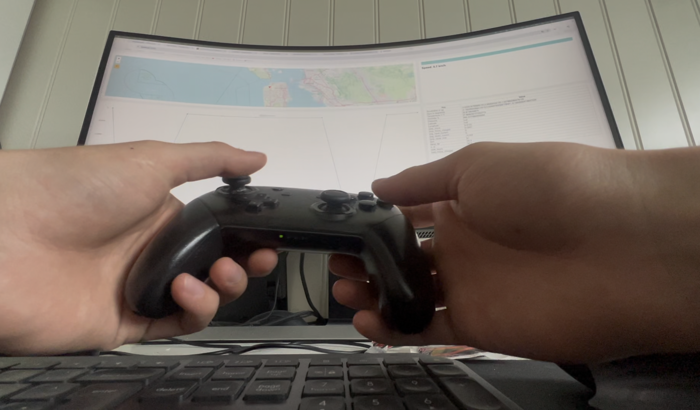

An RC car that doesn't care how far you drive it
A long-range RC car streaming two camera feeds over 4G, driven from a PC anywhere on the internet. The interesting bit isn't the hardware, it's the networking: a custom UDP hole-punching protocol so the car and the controller find each other peer-to-peer, with no static IPs, no relay servers, and the lowest practical latency.

Why this got hard
Home 5G was the trigger. Most consumer mobile connections sit behind carrier-grade NAT, which means: no incoming connections, no static IP, no port forwarding. The usual fix is a relay server somewhere in the middle, but a relay adds latency, and latency kills RC driving.
The protocol
UDP hole-punching
- Both endpoints register with a lightweight rendezvous service that does nothing but exchange public-IP + port pairs.
- Each endpoint then UDP-sprays toward the other's pair. NAT mappings line up on both sides and traffic flows P2P from then on.
- The rendezvous service is out of the path the moment the handshake completes.
Reconnect & bad-link handling
- Periodic keep-alives keep NAT mappings open.
- When the link drops, both sides re-handshake without operator intervention.
- Backpressure on the video pipeline so a brief drop doesn't cause a long queue of stale frames.
Video
Two cameras on the car (a forward-facing primary and a wider situational camera), encoded and shipped as parallel UDP streams. The receiver renders both feeds side by side. Encoder bitrate adapts to the measured link quality so picture degrades gracefully instead of stalling.


Demos
Early indoor demo.
Outdoor follow-along.
Long-range. Driving out of sight.
What I'd change
Move to QUIC for the video path so I get congestion control and connection migration for free. Add a forward-error-correction layer for the keyframes; losing a keyframe on a bad link is still the worst-case failure. And, predictably, give the car a better antenna.